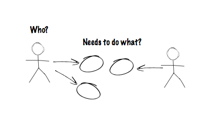

Engineering (Towards) Agile
Andy Miller
have you ever seen an
old photo of yourself...
...and been embarrassed at
the way you looked?
have you ever looked at old code you wrote...
PROGRAM MAIN | SUBROUTINE SUB1(X,DUMSUB)
INTEGER N, X | INTEGER N, X
EXTERNAL SUB1 | EXTERNAL DUMSUB
COMMON /GLOBALS/ N | COMMON /GLOBALS/ N
X = 0 | IF(X .LT. N)THEN
PRINT *, 'Enter number | X = X + 1
READ (*,*) N | PRINT *, 'x = ', X
CALL SUB1(X,SUB1) | CALL DUMSUB(X,DUMSUB)
END | END IF
| END
...and thought wtf?
have you looked at old project plans and budgets...
...and been embarrassed by how much time/money you spent on things that are so easy today?
the truth is we spent entire project budgets
on really hard stuff...
- figuring out how to organize source code
- figuring out dependency management
- figuring out build automation
- figuring out how we're gonna persist data
- figuring out test automation
- figuring out containerization
- ...
looking back, it's amazing we had time (or money) left over to work on the important things...
LIKE WHAT THE SOFTWARE WAS
ACTUALLY SUPPOSED TO DO!
the hardest thing is...
figuring out how "we" are
going to work together
to get this done
When building just about anything...

Engineering Process
- Research,
- Prototype,
- Sensitivity analysis (what matters?),
- Final build.
Command & Control
(waterfall-ish)
-
Research
"decide everything up-front," -
Prototype
"shutup and just build it," -
Sensitivity analysis
"sorry, it's too late to fix anything", -
Final build
"find another job 'cause a lot of people
are pissed off".
Agile(-ish)
-
Research
"product backlog," -
Prototype
"MVP," -
Sensitivity analysis
"prioritization and retrospectives", -
Final build
Agile(-ish)
-
Research
"product backlog," -
Prototype
"MVP," -
Sensitivity analysis
"prioritization and retrospectives", -
Final build
"iterative refinement".
The secret to how we got from C&C to agile...
is agile.
(and we're not done yet)
keep on refining
look at your tools,
pick up what you need,
make new ones when necessary,
repeat
tools?
swebok
software engineering body of knowledge
- Software Requirements
- Software Design
- Software Construction
- Software Testing
- Software Maintenance
- Software Configuration Management
- Software Engineering Management
- Software Engineering Process
- Software Engineering Models and Methods
- Software Quality
- Software Engineering Professional Practice
- Software Engineering Economics
- Computing Foundations
- Mathematical Foundations
- Engineering Foundations
- Software Requirements
- Software Design
- Software Construction
- Software Testing
- Software Maintenance
- Software Configuration Management
- Software Engineering Management
- Software Engineering Process
- Software Engineering Models and Methods
- Software Quality
- Software Engineering Professional Practice
- Software Engineering Economics
- Computing Foundations
- Mathematical Foundations
- Engineering Foundations
- ....
-
Software Engineering Process
- Software Process Definition
- Software Life Cycles
- Software Process Assessment and Improvement
- Software Measurement
- Software Engineering Process Tools
- ....
- ....
-
Engineering Foundations
- Empirical Methods and Experimental Techniques
- Statistical Analysis
- Measurement
- Engineering Design
- Modeling, Simulation, and Prototyping
- Standards
- Root Cause Analysis
- ....
? ? ?
https://www.crisp.se/gratis-material-och-guider/scrum-checklist
https://www.computer.org/education/bodies-of-knowledge/software-engineering/topics
Andy Miller
onetribeyoyo@gmail.com
andrew.r.miller@target.com
(612) 269-7369